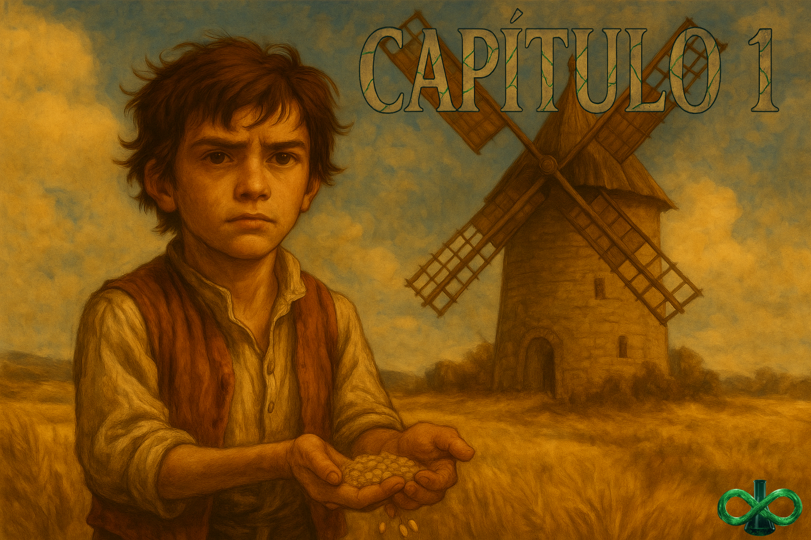
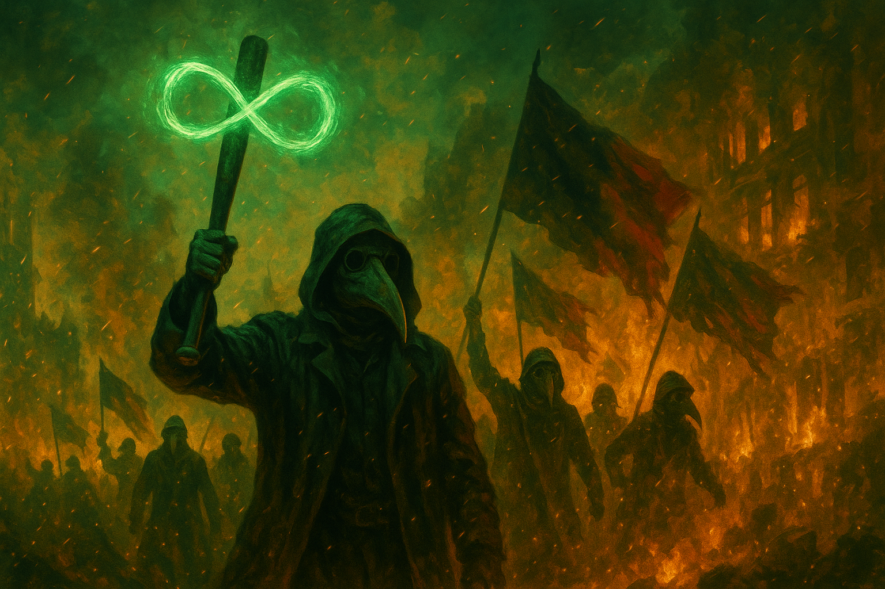

O moinho
#001
Quando eu era pequeno — e inocente, e que falta isso me faz — o mundo parecia melhor. Não que fosse. Eu é que ainda não conhecia a sombra dele. Às vezes eu volto a esse lugar sagrado de memória, numa tentativa tola de reviver o sentimento de dias como este.
Cortana corre na minha frente, rindo. Era só uma menina ansiosa e brincalhona. Hoje, uma das mais procuradas do império. Eu me chamo Vharmon, a propósito. Ou já me chamei, antes da máscara. Não sei o seu nome, leitor, mas se você achou este diário, não foi acaso. Cedo demais eu entendi que acaso não existe.
— Vharmon! Cortana! — a voz de Avelino corta o vento sem ferir. Ele levanta o braço, chama de volta. Avelino era como um pai pra nós. Ele — ou a ausência dele — divide a minha vida ao meio. Queria que fosse só metáfora.
— Já vai! — Cortana responde, e dispara outra vez. Tropeça, rala o joelho, levanta rindo do próprio ardor. Eu fico um passo atrás, parado, olhando.
Olhando o moinho.
O campo dos moinhos Caeli, hoje, são ruínas. Memórias ruins pra muitos. Pra mim, um símbolo. O vento bate nas pás. Fim de tarde. A madeira geme baixinho. Avelino aproxima, inclina a cabeça.
— Vai ficar aí parado mesmo, menino? O que você tá olhando?
— Ele é meio bobo — Cortana provoca, com farinha no queixo. — Às vezes para do nada e fica olhando as coisas.
Era como se eu lembrasse antes de lembrar. Como se eu revivesse antes de reviver. Talvez eu estivesse. Hoje eu vejo: meu trabalho ainda é sobre moinhos, grãos e vento. A vida tem dessas ironias.
Eu respiro, largo o instante na palma da mão — e entro no moinho.
O velho disse que tinha muito trabalho a fazer. Cortana, que sempre arruma trabalho onde não há, já pegou o balde e a vassoura como quem aceita um convite pra dançar. Hoje, ela ainda pensa assim. Algumas coisas não mudam — só se adaptam.
Lembro desse fim de tarde como se fosse ontem: o dia em que Avelino nos explicou o grande moinho. Não o de pedra e madeira apenas, mas o moinho onde somos os grãos. Ele encostou a mão no poste da porta, ouviu um segundo o vento, e falou baixo, como quem não quer assustar a máquina:
— O moinho é uma conversa entre o vento e o trigo… foi isso que você disse, Cortana? — ele sorriu de canto. — Então me explica como é essa conversa.
Cortana se enrola, ri, tenta: “O vento empurra e o trigo… aceita?” — e para no meio da frase, fazendo careta. Eu acabo salvando: aponto pra fora.
— As asas pegam o vento, mestre. Se a gente abre muito, ele fica forte demais; se fecha um pouco, a gente manda melhor na força.
Avelino concorda com os olhos.
Ah, se eu soubesse a ironia que me aguardava. A criança que trabalhava num moinho, hoje tenta destruir o maior moinho de todos. O Império Portokali. O que acontece se um grão soubesse, antes de cair, o que está por vir? Essa é a história da minha vida.
— Muito bom, Vharmon. — Avelino cutuca de novo. — E se o vento mudar?
Eu aponto pro topo, simples:
— A gente vira a cabeça do moinho pra tomar o vento de frente. Moinho bom não briga com o tempo — conversa com ele.
— E pra onde vai a força que o vento dá? — ele insiste, fingindo não saber.
Eu bato de leve no madeirame, escuto o ronco manso:
— Desce por dentro, como se a madeira tivesse veias. Lá embaixo, duas pedras se aproximam e se afastam, do jeito certo. Não é pra esmagar: é pra convencer o grão a virar farinha.
Avelino ri com gosto, satisfeito com a nossa meia-aula. Cortana roda a vassoura como se fosse espada.
— Então guardem — ele diz, olhando primeiro pra mim, depois pra você que lê: — moinho bom é acordo. Vento, pedra e mão. Cada um cede um pouco. Se um só manda, o resto vira pó.
“Moinho bom é acordo.” Hoje eu entendo essa frase mais do que nunca. Às vezes me pergunto quanto Avelino estava mesmo ensinando sobre moinhos… e quanto estava me preparando para a verdade. As palavras dele soavam como parábolas discretas do que me esperava.
— E o teimoso? — Cortana perguntou, curiosa.
— A teimosa é você — ele riu, bagunçando o cabelo dela.
Eu tentei responder:
— É… aquela pecinha que fica batendo, pra lembrar o grão de descer… se ela para, a gente esquece o ritmo…
Avelino entrou técnico demais, por impulso — falou de vibração, de passagem, de peso. Eu e Cortana trocamos um olhar de quem se perdeu no meio do caminho. Então ele respirou, simplificou:
— Pensa assim: o teimoso é o tic-tac do moinho. Enquanto ele bate, ninguém cochila. Se ele cala, a pedra esquenta, a farinha amarga, e a gente perde tudo.
Ele nos pôs a trabalhar e ensinou trabalhando, como sempre:
— Dá pra aprender enquanto trabalha.
Percebe, leitor? “Dá pra aprender enquanto trabalha.” Quanto Avelino sabia para onde a gente estava indo? Talvez eu delire. Mas neste diário — minha tentativa de guardar memórias antes que eu perca meu rosto no que vem aí — talvez você enxergue a ironia: como cada lição pequena reverbera no resto da minha vida.
— Agora, vamos separar o joio do trigo. Às vezes um único joio estraga a farinha toda — disse ele, me lançando uma piscadela.
Ah, ele sabia. Ou o universo é só irônico. Ou é a nossa cabeça que costura sentido onde não tem. Ou tudo isso ao mesmo tempo.
E então trabalhamos: Cortana peneirando com pressa feliz; eu sustentando o ritmo do tic-tac; Avelino corrigindo com a palma da mão, leve, como quem afina instrumento. O pó subia manso. O vento do fim de tarde entrava pelas frestas. E, entre grãos e risos, a aula ficava inteira nas nossas mãos.
Uma única lembrança parece conter a semente da minha vida inteira. Moinho, vento, joio, trigo, farinha. Vai fazer sentido — eu juro. Mas talvez dependa mais de você do que de mim, leitor.
Naquele dia, minha irmã — sempre ela — fez a pergunta que quase calou Avelino.
— Quando vamos poder sair daqui? — disse, sorrindo.
Avelino ficou quieto. Eu vi o silêncio pousar nos ombros dele.
— Querida… a vida dos Caeli é isso. Como no moinho, cada peça tem sua função. A nossa… é esta. — falou sem jeito.
Eu vou te amar pra sempre, Avelino. Mas, naquele dia, você mentiu.
— Vharmon disse que não somos Caeli de verdade — Cortana entregou.
— Vharmon… — Avelino suspirou.
— Somos meio sangue. Por isso trabalhamos no moinho e não vivemos no palácio — completei, pequeno e certo.
Desde cedo eu entendia o lugar de cada coisa. Engrenagens, peças, partes — sempre pertencemos a alguma estrutura. Mas há algo que não pode ser substituído: o vento. Quando entendi isso, mudei.
O vento é a ideia. É o pensamento que vira direção.
Eu ainda vou contar como deixei de ser grão, virei moleiro, e agora me preparo pra escolher um caminho que talvez me faça ser o vento. Antes disso, admito: fui pego por um sentimentalismo — quase medo do que vem — e é isso que me empurra a escrever este diário. Uma tentativa de me agarrar ao que em mim ainda é… humano. Uma saudade breve de ser só um grão, prestes a virar farinha.
Tirei quase um ano para me isolar e repassar a vida, como terapia. Explicar à parte em mim que ainda é grão que chegou a hora de aceitar que tudo mudou.
Se nada disso fizer sentido pra você, eu vou entender. Mas, se a curiosidade ficou, deixa eu te contar como esse menino do moinho virou o doutor sem rosto — e como o criminoso virou símbolo.
Agora, o símbolo está prestes a virar ideia. E esse é um caminho sem volta. Quando eu deixar de ser o que sou e me tornar vento, serei o que movimenta outros moinhos.
Na parábola que te conto — e que talvez você entenda melhor adiante — ser vento é o último estágio. E algo em mim, muito humano, clama. Chora, se desespera, pede pra continuar sendo apenas grão.
Foi essa parte que me fez errar quando eu não podia. Por isso estou em exílio. Que este diário te sirva como me serviu: para lembrar quem eu era enquanto viro o que preciso ser.
Obrigado por ter vindo até aqui. É quase como se, pelos teus olhos, eu não estivesse sozinho. Tomara que, pelas minhas letras neste pedaço de papel, você também não esteja, leitor.
FIM
.
#002
EM BREVE